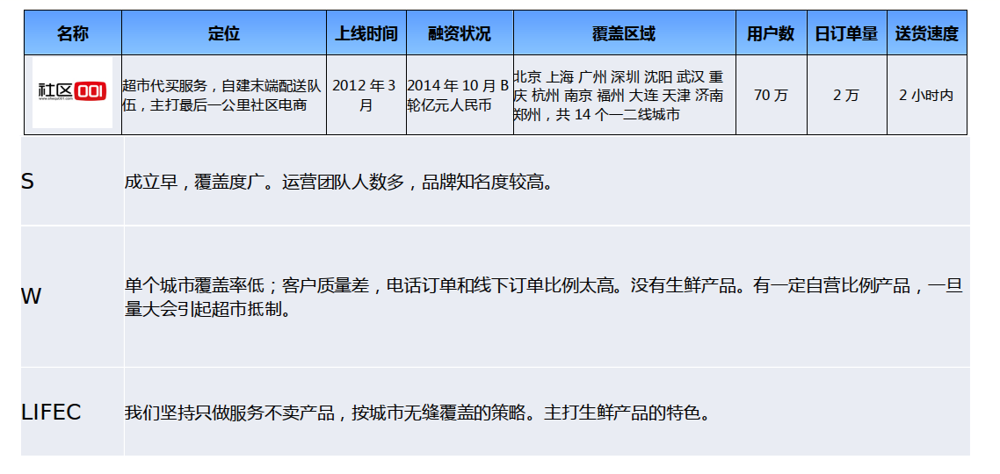
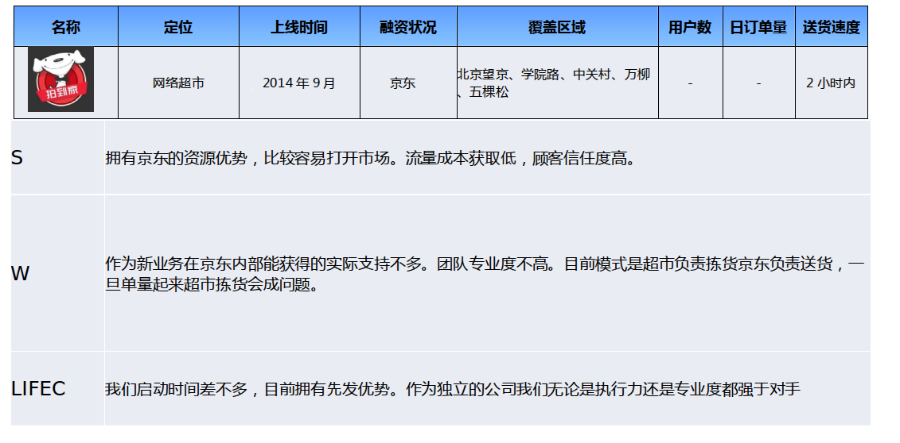
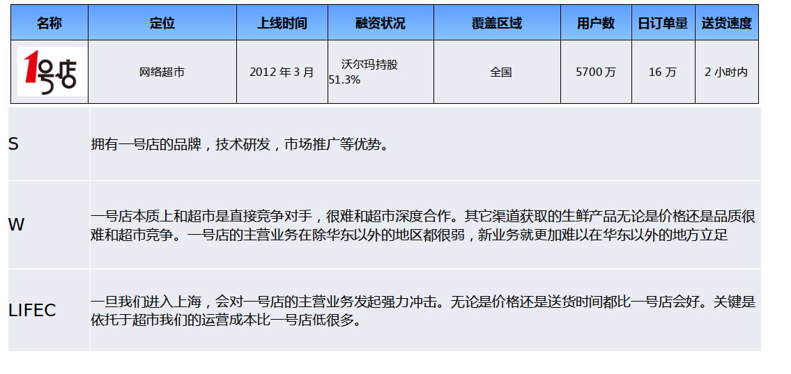
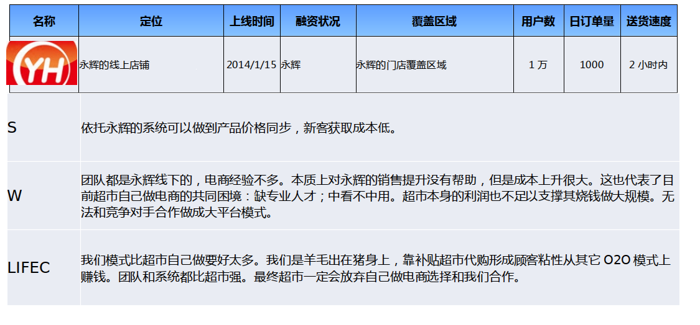

扫描下方二维码，加入生活圈项目意向投资群
温天立
蓝莲花研究机构创始人
温先生具备深刻的行业洞见和广泛的行业人脉，并于2015年创设了中国互联网独立研究机构-蓝莲花
从2012年到2014年，温天立先生担任华兴资本证券研究部主管并出任董事总经理。 从2010年到2012年，温天立先生担任未来资产证券 (Mirae Asset Securities) 互联网及电信研究主管，董事总经理。从2002年到2010年间温天立先生分别在法国巴黎银行，瑞银证券, MainFirst Securities和摩根士丹利任职。从2005到2007年，温天立先生分别担任中国汽车网和郁金香传媒的首席财务官。从2002-2008年温天立先生在宝洁 (P&G) 供职。 温天立先生拥有芝加哥大学MBA，伊利诺伊大学香槟分校的学士学位，并曾在复旦大学就读。
胡磊
蓝湖资本创始合伙人
在进入风险投资行业前，胡磊曾在波士顿咨询公司（BCG）工作了4年。期间，他主要的工作是分析大量的市场和运营数据，并结合行业发展的趋势，为客户在激烈的竞争中寻找新的制胜模式，包括兼并收购、销售渠道、营销策略等。
7年前，胡磊加入了纪源资本（GGV）。期间，他投资了世纪互联（Nasdaq: VNET），去哪儿（Nasdaq: QUNR），美丽说，豆果网，聚胜万合和E店宝等公司。在投资的过程中，胡磊热衷于和企业家一起分析和探讨国内外行业发展的趋势，捕捉其中的亮点。并在严密的逻辑思考和论证之外，孜孜不倦的探索各种不确定的路径，籍此帮助被投资企业逐步建立自己的竞争优势。
蓝湖资本（ Blue Lake Capital ）是新一代的研究驱动的风险投资基金，致力于寻找有潜力的企业家并协助他们建立伟大的企业，引领行业的变革，改变人们的生活。
蓝湖资本第一期基金共 2 亿美金，主要投资于早期的互联网企业，单笔投资额通常在 100 万美金到 1500 万美金之间。
2014年第二季度生活圈获得温天立先生个人天使投资数百万元人民币； 2014年第四季度生活圈获得蓝湖资本A轮投资数百万美元，估值数千万美元。 此次众筹股权由温天立先生转让所持价值20万美元股份（约合0.5%股份），每份2万美元共10份。因考虑到A轮投资人与潜在引进的B轮投资人都会有优先购买权，此与A轮估值一致的股权转让仅能通过代持方式转让，但会由律师出具完整的法律文件保护投资人权益。 天使投资人承诺在所持股份决定全部出售时，众筹股东具有优先退出权力。
刘先生拥有多年商超、电商运营经验与人脉。
2002-2005年 家乐福北方区非食品采购总监；
2005-2011年 亚马逊中国非食品采销高级总监；
2011-2014年 京东商城采销副总裁。
刘先生2002年获得对外经济贸易大学MBA学位。
1998-2004年 中国邮政航空公司营业部副总经理；
2004-2006年 顺丰快递北方区总经理；
2007-2008年 北京润德快递有限公司创始人；
2009-2010年 宅急送副总裁；
2010-2014年 京东配送副总裁。
2010-2014年 京东西南区总经理
2004-2006年 新浪即使通讯事业部项目经理；
2006-2008年 朗玛科技工程部部门经理；
2008-2010年 宋先生任无线讯奇搜索事业部高级经理；
2010-2014年 宋先生先后参与创立铜牛户外用品与威卡顿。
公司与商超达成紧密合作，在线上平台帮助商超及其他商户品牌露出，每天获取商超的SKU与定价，包括生鲜类产品。与线上同类平台甚至包括一号店相比，品类价格具有优势。
因与商超合作紧密，生活圈会在商超收银处设置驻店经理管理拣货、发货流程，同时推广app的下载和使用。
平台向用户每单收取6元（5公斤内）配送费，试运营阶段还给于用户消费9折优惠，价格、地推共同导流。
15年1月27日北京家乐福姚家园店试营业，至3月初，共在北京开设6家家乐福店包括通州、方庄、国展、石景山和马家堡。
| 内容 | 截至 2015/2/28 | 备注 | 内容 | 截至 2015/3/8 | 备注 |
|---|---|---|---|---|---|
| 业务项目 | 1 | 超市代购 | 业务项目 | 1 | 超市代购 |
| 门店数量 | 1 | 家乐福姚家园店 2015年1月27日开店 | 门店数量 | 6 | 新增家乐福通州、创益佳、方庄、石景山、马家堡店 |
| 覆盖人群 | 约20万 | 周边5KM | 覆盖人群 | 约150万 | 统一为周边3KM |
| 订单数量 | 1055 | 成交订单 | 订单数量 | 2058 | 完成订单 |
| 单店日均 订单数 | 33 | 单店日均 订单数 | 35 | 2/28-3/5日陆续开5站 | |
| 订单金额 | 362,626 | 54% POS结算 | 订单金额 | 672,632 | 已付金额 |
| 客单价 | 344 | 春节期间客单价偏高 | 客单价 | 271 | |
| 注册用户 | 1184 | 注册用户 | 2570 | ||
| 成交用户 | 917 | 成交用户 | 2217 |
A.快书包 快书包产品2010年6月8日上线，推出“一小时到货”服务。公司自采货物、自建仓储、自建物流，初期以图书为主，后发展进口食品机日常用品。截至2014年6月，公司累计融资共2,000万元，而2013年销售额仅1,000万元，最终不得不关闭服务。 除了融资能力外，快书包主打品类均非时效性要求高的品类，即所谓未切中用户的刚需。
B.社区001 2012年6月上线，同样以社区购物为切入点，与客户所在小区附近的商潮合作，自配物流人员。覆盖商超半径5公里，送达时间1小时。 公司对外披露数据是2014年覆盖近30个城市，合作商户5,000家，SKU 66万， 销售额达到20亿元人民币。2013年公司引入A轮融资1亿元人民币，2014年的B轮融资就一直未予披露。
但在运营过程中，社区001存在几个问题：1）移动端上线迟缓，在14年底或15年初才刚上线，单一的PC端应该是消耗了大量的资金来获取用户，且初期体验不佳；2）淡化超市品牌的露出，最终会破坏与超市的合作，美国已有先例超市禁止Instacart采购员入场；3）自己备货、销货，直接与一号店在各品类产生竞争，但除了生鲜，所有其他品类商品的时效性要求不高，平台价格也无竞争力；4）多家媒体质疑其运营数据。    提供社区”最后一公里“的物流配送，产品应用“生活圈C”已上各主流应用商店。
领投人：
从2012年到2014年，温天立先生担任华兴资本证券研究部主管并出任董事总经理。 从2010年到2012年，温天立先生担任未来资产证券 (Mirae Asset Securities) 互联网及电信研究主管，董事总经理。从2002年到2010年间温天立先生分别在法国巴黎银行，瑞银证券, MainFirst Securities和摩根士丹利任职。从2005到2007年，温天立先生分别担任中国汽车网和郁金香传媒的首席财务官。从2002-2008年温天立先生在宝洁 (P&G) 供职。 温天立先生拥有芝加哥大学MBA，伊利诺伊大学香槟分校的学士学位，并曾在复旦大学就读。
蓝湖资本（ Blue Lake Capital ）是新一代的研究驱动的风险投资基金，致力于寻找有潜力的企业家并协助他们建立伟大的企业，引领行业的变革，改变人们的生活。
蓝湖资本第一期基金共 2 亿美金，主要投资于早期的互联网企业，单笔投资额通常在 100 万美金到 1500 万美金之间。
A. 顶尖的创业团队拥有丰富的行业经验和人脉。创始团队由京东商城副总级别的电商老将构成，除了对电商、物流等拥有经验外，还拥有深厚的线下商超经验。
B. 切入社区O2O中的生鲜及日用品“最后一公里”配送的刚需；不同于竞争对手，生活圈仅作商超产品配送，一个价格较所有其他自备货的电商有优势，二来商超愿意与其深度合作，包括开放SKU和商超收银台。
C. 行业知名投资人背书，价格有折让。知名互联网研究员温天立参投天使轮，由GGV和DCM两位投资人创建的蓝湖资本投资了公司A轮，现公司正与多家主流接洽B轮融资。
{kind=link}
{kind=link}
{kind=link}
{kind=link}
{kind=link}
{kind=link}
{kind=link}
{kind=link}